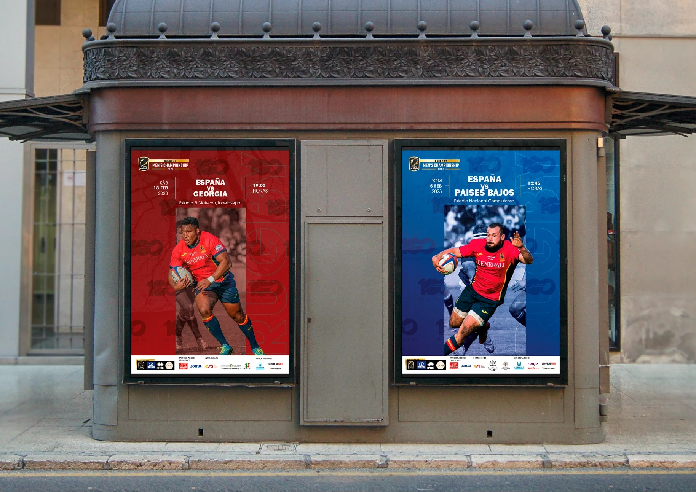
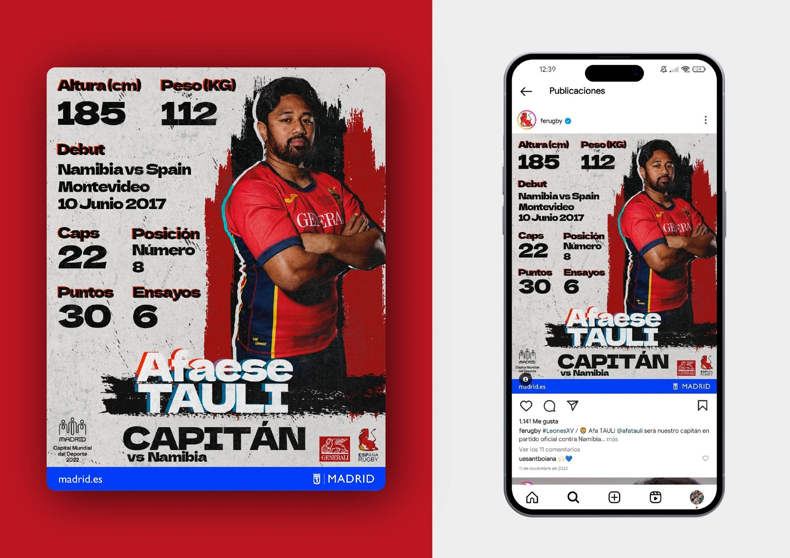

Real Federación Española de Rugby
Descripción
Durante casi dos años trabajé como diseñador gráfico en la Real Federación Española de Rugby, encargándome de la imagen de la selección tanto en la calle como en redes sociales.
El proyecto principal fueron los carteles de los partidos oficiales de todos los equipos de la selección. La idea era que el jugador tuviera todo el protagonismo, que la información del partido se leyera rápido y que todos siguieran una misma línea gráfica, desde los mupis hasta las stories.
Para redes diseñé creatividades con las estadísticas de jugadores y equipos para presentar las convocatorias antes de cada partido. También llevaba las redes sociales de la Federación y editaba vídeos.
Además, hice identidades visuales, merchandising, dossieres, presentaciones, artes finales para imprenta, campañas de email marketing y la web de la Federación en WordPress.
Cliente
Año

